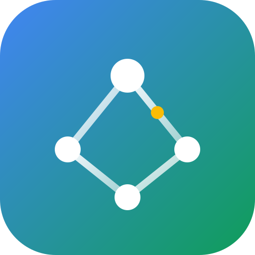

AetherMeshAetherMesh sits on top of whatever you already run — a cloud VM, a VPS, the desktop under your desk, a Raspberry Pi — and decides where each task should run and how few bytes have to move to get it done.
Most systems move data to the machine that runs the code. When the data is large and the link is thin, that movement is the job.
Data is identified by its BLAKE3 hash. A dataset read by a hundred tasks crosses the wire once, and repeated chunks never cross it at all.
compute + transfer + latency − locality. Every weight is
configurable, and the score comes back term by term, so you can see why
a node was chosen.
Tasks are WebAssembly with a fuel budget and no host access. An endless loop costs one task, not the node.
Nodes declare what they are — gpu=true,
region=eu-west — and a task says what it needs. If nothing
qualifies, the task is refused rather than placed somewhere it was not
allowed.
A node with nothing to do doubles the gap between heartbeats, up to half the controller's eviction window. Work, or a real change in load, snaps it straight back.
A 1.3 MB controller and a 2.7 MB agent, pure Rust, no C toolchain to
cross-compile for aarch64 or armv7.
Three commands to a working mesh. Rust 1.88 or newer; Windows, macOS, Linux, and Raspberry Pi are all first-class.
cargo run --release -p aether-controllerPort 7000 for agents, 7100 for your programs.
cargo run --release -p aether-agent -- --controller 192.168.1.10:7000from aethermesh import AetherMesh
with AetherMesh.connect(port=7100) as mesh:
data = mesh.publish(open("input.bin", "rb").read()) # moved once
for window in range(24):
print(mesh.run("hash", str(window).encode(), inputs=[data.data_id]).node_id)Everything above is unauthenticated and bound to localhost. Before it reaches a real network, turn on TLS and tokens — example 08 is the version to copy.
Four steps, and the third is the one that saves the bytes.
The client hands the controller bytes. They are hashed, and that hash is the name they are known by from then on.
Every live node is scored on load, measured latency, measured bandwidth, and how much of the task's data it already holds.
The winner receives the chunks it does not have — compressed if the link is slow enough to be worth it, split across several connections if it offered them.
A built-in task or a sandboxed module runs, and the result comes back on the same connection. A node that dies mid-flight gets the task retried elsewhere.
100 tasks, 3 workers, one 16-core machine, loopback. Dask is the closest widely used system to compare against.
| System | Workload | tasks/s | p50 | p99 |
|---|---|---|---|---|
| AetherMesh | framework overhead | 5,503 | 0.17 ms | 0.26 ms |
| Dask | framework overhead | 63 | 15.4 ms | 39.1 ms |
| AetherMesh | 8 MiB shared dataset | 402 | 1.67 ms | 2.47 ms |
| Dask + scatter | 8 MiB shared dataset | 31 | 30.9 ms | 46.2 ms |
| Dask, naive | 8 MiB shared dataset | 21 | 40.4 ms | 87.6 ms |
What this does not show. The task
bodies differ — Dask runs Python blake2b, AetherMesh runs a Rust
BLAKE3 built-in — so the dataset rows mix framework cost with a language
difference; the overhead row is the fair comparison. Dask also does far
more than AetherMesh. And this is loopback, not a network.
Full methodology →
Submit work from TypeScript, Python, Go, Java, or C# with a dependency-free SDK. Write the work itself in anything that compiles to WebAssembly.
const mesh = await AetherMesh.connect({ port: 7100 });
const mod = await mesh.publishFile("task.wasm");
await mesh.runWasm(mod.dataId, input);with AetherMesh.connect(port=7100) as mesh:
data = mesh.publish(payload)
mesh.run("hash", b"", inputs=[data.data_id])mesh, _ := aethermesh.Connect(aethermesh.Options{Port: 7100})
data, _ := mesh.Publish(payload)
mesh.Run("hash", nil, []string{data.DataID})try (var mesh = AetherMesh.connect(opts)) {
var data = mesh.publish(payload);
mesh.run("hash", seed, List.of(data.dataId()), List.of());
}await using var mesh = await MeshClient.ConnectAsync(opts);
var data = await mesh.PublishAsync(payload);
await mesh.RunAsync("hash", seed, inputs: [data.DataId]);The Python SDK ships a real concurrent.futures.Executor,
so submit, map, and as_completed
keep working — only the constructor changes.
with MeshExecutor.connect(port=7100) as pool:
pool.map(pool.builtin("hash"), payloads)Your language is not here? The client protocol is four bytes of length and one JSON object, both directions — about two hundred lines to port, which is what each SDK above actually is.
Ten of them: one terminal, several terminals, two devices, a web page, a Python pipeline, a WASM task, a secured mesh, labelled nodes, and a drop-in thread pool. Browse →
The module contract, the limits, and recipes for Rust, AssemblyScript, and TinyGo. Read →
What is defended, what each credential is scoped to, and what is deliberately out of scope. Read →
A desktop, a Raspberry Pi, and a cloud VM in one mesh, including the firewall rules. Read →